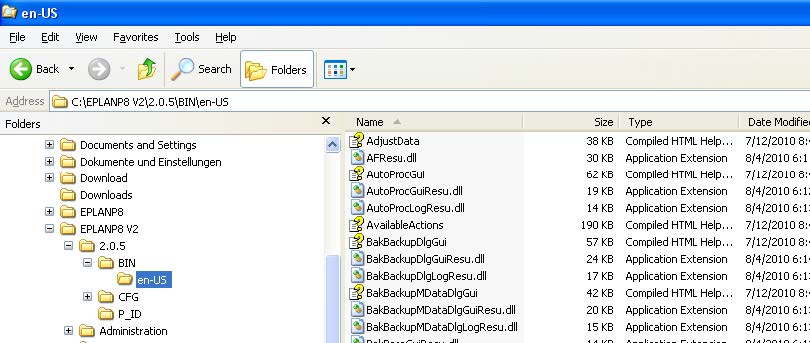

В этой главе дается краткое объяснение некоторых важных принципов EPLAN, функций, и методов работы, а также использует целый ряд примеров, иллюстрирующих выбранные факты и настройки системы.
Важными моментами являются: структура каталогов, настройки, начальные установки, замечания по проекту и свойства страницы, заметки о конкретных диалоговых свойств, обработки схем, форм, областей печати, библиотеки символов и обзор моих личных сочетаний клавиш.
1-й принцип.
В EPLAN Electric P8 на протяжении редактирования проекта разрешены ошибки. Этот основной принцип разрешения ошибок проиллюстрирован в следующем примере. Контактор может иметь два вспомогательных контакта на схеме, причем оба из них изначально имеющие одинаковое обозначение точек подключения. Вещи, которые физически не возможны, изначально «разрешены» в EPLAN во время работы над проектом. Пользователь не замедляется на «раздражающих» ошибках или сообщениях во время редактирования. Этот тип ошибки, естественно, появляется в управлении сообщениями, но только в качестве записи сообщений. Эта запись изначально не имеет никаких дальнейших последствий. Когда редактирование проекта продвинулось достаточно далеко, или завершено, EPLAN может выполнить проверку проекта. Ошибочные записи, такие как описанные выше, будут перечислены в управлении сообщениями, если они уже там не перечислены. Конечно эта ошибка должна быть исправлена в порядке получения правильной практики. Однако это необязательно. EPLAN позволяет пользователю решить, есть ли в проекте ошибоки или нет, и какой приоритет у сообщения (ошибка, предупреждение или примечание) должен быть. Кроме того, можно предотвратить такие ошибки. Это настраиваемая возможность EPLAN.
2-й принцип.
В EPLAN Electric P8, что выделено, то и редактируется. Следующий пример поясняет этот принцип. Если выделен свободный текст на странице и запущена функция перевода, когда именно этот свободный текст будет переведен. Если я выберу эту страницу в навигаторе страниц, когда функция перевода переведет все тексты на выбранной странице основанной на их свойствах.
3-й принцип.
EPLAN Electric P8 записывает данные и любые ссылки налету. EPLAN это онлайн система. Все ссылки и данные устройств постоянно (т.е. онлайн) обновляются. Единственным ограничением (если вы хотите, чтобы они обновлялись) относятся к данным связи. По причинам производительности, они обновляются только по запросу с помощью нескольких конкретных действий. EPLAN выполняет остальные полностью независимо друг от друга. Типичным примером этого может служить редактирование страницы с последующим изменением страницы. Здесь вам необходимо вручную запустить любое требуемое обновление соединений. Существует, конечно, настройка которая позволяет автоматически обновлять соединения. Однако, это может негативно повлиять на производительность проекта. На мой взгляд, постоянное (онлайн) обновление соединений не является действительно необходимым, потому что соответствующие действия, такие как графические отчеты по проектам или автоматизированных процедур, таких как автоматическая нумерация устройств обновляет соединения перед выполнением фактических действий.
4-й принцип.
EPLAN Electric P8 может управляться при помощи графического интерфейса. Это означает, что устройства (символы) в первую очередь могут быть размещены на схеме и в дальнейшем могут быть назначены частям, в том числе связанных с ними определений функций. Это не обязательно, и у вас есть полная свобода при редактировании проекта.
5-й принцип.
EPLAN Electric P8 может управляться при помощи объектно ориентированного подхода. Это означает, что внешние списки двигателей или другие списки компонентов могут быть считаны в систему как списки устройств, и проект может быть начат с этого шага.
ПРИМЕЧАНИЕ: Принципы 4 и 5 могут быть комбинированы с любым другим. Здесь нет ограничений, когда работаете в EPLAN Electric P8.
EPLAN может использовать любую желаемую структуру директорий. EPLAN позволяет пользователю делать свободный выбор. Данные, такие как проектные или основные данные, могут быть легко интегрированы в существующую структуру данных компании. EPLAN рекомендует установку/запуск программных файлов локально, и только хранение данных в сети. Я согласен с этой рекомендацией. Любое дальнейшее структурирование и организация остальных основных данных является обязанностью пользователя. По умолчанию, EPLAN создает директории со следующей структурой:
